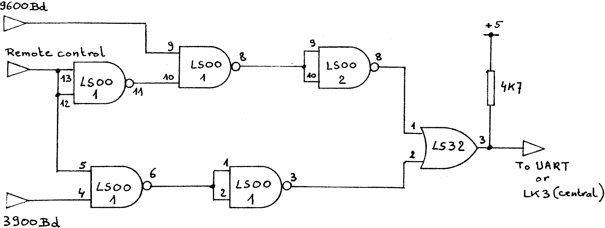

80-Bus News |
July–October 1982 · Volume 1 · Issue 3 |
| Page 27 of 51 |
|---|
Recently I was able to buy a second hand Anadex DP8000 printer, and I will explain the interface to a Nascom 1, as this could be of interest to some people. The DP8000 is a dot matrix impact printer with RS232, 20 – 60 mA loop and parallel interfaces. The print rate is 112 characters per second.
I decided to use the R5232 interface at 9600 baud. Two things had to be considered, how to generate the 9600 baud clock signal, and how to control the printer. The first question was quickly solved by changing the TTY clock oscillator, IC33, so that it oscillated as 153.6KHz (16 times the baud rate), the following changes were made:
R30 changed to 1K8
VR1 changed to 10K
C12 changed to 300pF
I now had to switch two different clock rates to the UART, 62.5KHz for tape and 153.6KHz for the printer, this was achieved by using the circuit in fig. 5., and remotely controlling the change over by the state of the ‘tape LED’. The control signal should be taken from pin 3 of G1 of the Computing Today tape controller, or from pin 12 of IC41 if the former is not installed. When the tape LED is active, during a Read, Write, Verify, CSAVE or CLOAD command, the clock rate is switched to 62.5KHz, at all other times it is switched to 153.6KHz.
| Page 27 of 51 |
|---|